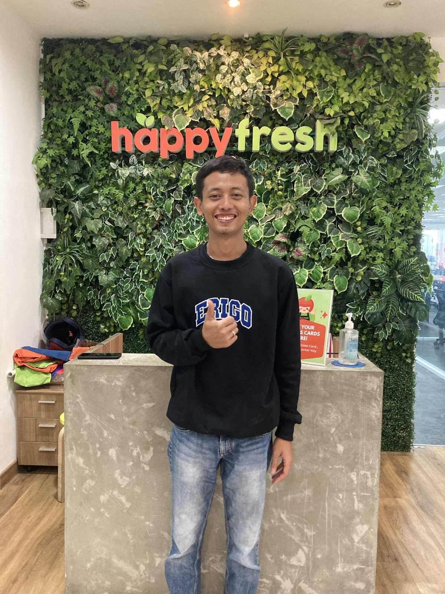

AI workflow
Eksplorasi alur kerja QA dengan bantuan AI.

Saya bekerja di QA. Di sini saya berbagi catatan dan proyek dari eksplorasi AI dalam pekerjaan sehari-hari.
Hal yang saya pelajari
Memakai Claude untuk membantu membuat test case.

Eksperimen yang saya kerjakan
Eksplorasi alur kerja QA dengan bantuan AI.
Eksplorasi pengujian otomatis untuk aplikasi mobile.
Dhani / DeepQA